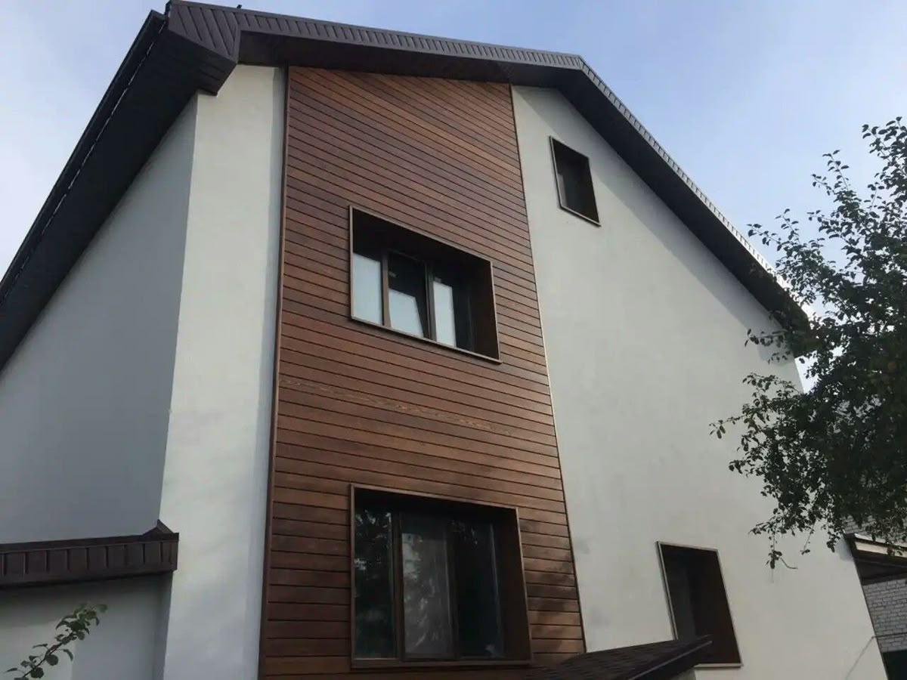

1. Washing Deck
WPC deck surfaces can be cleaned regularly to maintain their appearance and long-term performance. For light dirt and dust, rinsing with clean water is usually sufficient. For heavier dirt, warm water mixed with a mild, non-abrasive detergent may be used. During cleaning, a soft brush or cloth should be used. Harsh brushes, wire pads, and aggressive chemical cleaners that may damage the surface must be avoided.
If pressure washing is required, the water pressure should not exceed 1,200 PSI. The nozzle should not be held too close to the surface, and water should not be applied to the same area for an extended period. Excessive pressure may cause surface wear or deformation and is not recommended. After washing, allow the surface to dry naturally and ensure proper drainage to prevent water accumulation.
